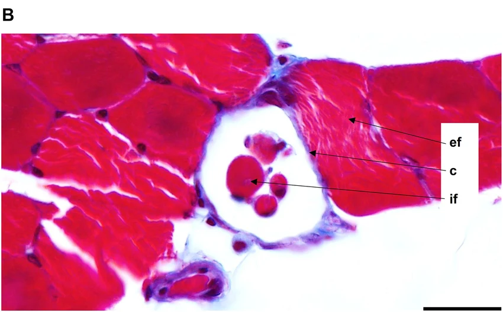
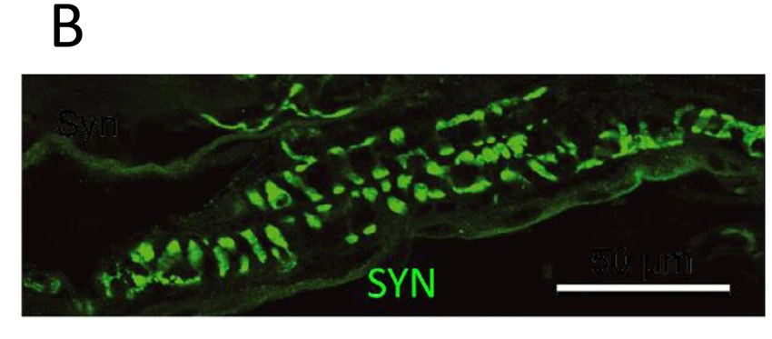

Inside a muscle spindle
Stretch a muscle and a nerve inside it fires. Turn the spindle to see where that signal begins. Then follow a single sensory axon through one stretch of a rat’s calf.
The stretch receptor
3D cutawayFind a structure
Drag to rotate, or focus the figure and use the arrow keys. This model enlarges the spindle and opens the capsule. Its shape and colours are illustrative. The recording contains no image of this specimen.
Download the 3D model (GLB)One stretch, one axon
Blum et al. · aff015 · trial 1The apparatus moved the left calf muscle–tendon unit of an anaesthetised adult female Wistar rat. One sensor measured tendon force, another measured the imposed position, and an electrode recorded a group Ia sensory axon. Each tick below marks an electrical spike detected by the original investigators.
The pale band marks 100 ms of history. The dark line starts the next 20 ms. The overview shows the whole trial, including the final 13 ms beyond the last complete bin.
Count the spikes
See the electrical trace behind these spikes
The electrode recorded inside the sensory axon. Follow its electrical signal across the same six intervals. The short ticks beneath the trace mark the investigators’ detected spikes. The vertical axis shows archived electrical units.
How many spikes come next?
Each model sees only the previous 100 ms at the line. Its answer is an expected count, which can be fractional. The recording gives a whole number.
| What the model saw | Expected spikes in 20 ms |
|---|
Across 94 trials from three recordings, each withheld in turn, the combined Transformer missed by 0.435 spikes per 20 ms on average. Using spike history alone gave 0.387. Simply repeating the last count gave 0.325. The model errors average three training seeds and give each recording equal weight.
Can past spikes help forecast the next mechanical change?
A separate linear model starts from the most recent mechanics. A persistence forecast expects zero change in both channels. Compare that first guess with the fitted forecasts, with and without the five recent spike counts. Each observed change ends at the last mechanical sample in the following 20 ms.
| Source of change | Force difference | Position difference |
|---|
Each column retains its own archived units. Adding prior spikes did not consistently improve the forecasts across the three held-out recordings.
Recording, clocks and reuse
Both clocks span 8.460–11.673 s. Mechanics has 6,427 samples at 2 kHz and the electrical recording has 64,261 at 20 kHz. Every tenth electrical timestamp aligns with a mechanical timestamp to within 2 × 10⁻¹⁵ s. The 225 detected events retain their original timestamps. Windows include their left edge and exclude their right edge.
The two mechanical channels retain their archived amplitudes. Their physical calibration and the delay between sensors are unknown. Tendon force concerns the whole muscle–tendon unit. The force on an individual fibre was not recorded. The authors recorded the electrical signal inside the sensory axon. The archive supplies no verified conversion to absolute membrane voltage in millivolts.
Blum and colleagues, 2020. Original study · Dryad data, CC0 · Sources and licences
What does the tissue look like?
Compare the cutaway with two real views from other rats. One cuts across a calf muscle. The other follows the sensory endings lengthwise in a jaw muscle.




Both photographs are cropped from the labelled panels and resized under CC BY 4.0. The model follows the branching and arrangement of the tissues. The sensory ending’s turns, fibre spacing and gross proportions are approximate.